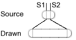

|
Home · All Namespaces · All Classes · Grouped Classes · Modules · Functions | |
Themed Views defined by XML files, describe a hierarchical group of visual and formatting elements. They are used by the following:
to display items such as: status information, text and animations.
Qt Extended interacts with a themed view using elements such as page, line, alarm, date, button0. Each of these elements has attributes which affect the visual appearance and placement of elements. For a full list of view elements refer to: Themed View Elements. Attributes that are common to many elements are known as Common attributes and include:
The following sections provide detailed descriptions of these elements.
The name attribute is available for all elements, however, each element within a type must have a unique name as Qt Extended interacts with elements using their name. For a list of Qt Extended elements see Known Elements.
The rect attribute is available for all elements and positions an element relative to the parent element geometry. It has one of two forms:
If any of the top or left coordinates are negative, they are relative to the right/bottom of the parent element. If bottom or right coordinates are less than or equal to zero, they are relative to the right/bottom of the parent element. This allows a theme to scale.
For example, to place a rect element that scales as the view gets wider:
<rect rect="20,10,-20,50" color="Highlight" brush="Highlight"/>
This places a rectangle, using the Highlight color, at 20,10 with height of 40 pixels and the y2 coordinate 20 pixels from the parent element's right side.
The theme engine supports different units. By default position and size are specified in pixels but it is possible to use point sizes or proportional positioning.
<rect rect="10,10,150x12pt"/>
This element has a height of 12 points.
<image src="settings" rect="0,0,50%x50%"/>
This element width and height are half of the width and height of its parent. It will be updated if the size of the parent changes.
Attributes to show or hide and elements are available to all elements. The transient and active attributes control the visibility of an element. Both the transient and active attributes can have literal values of yes or no, with the default value for transient being no and the default value of active being yes. The active attribute only has effect when transient="yes". In addition to a literal value, a boolean expression can also be specified for the value of the active attribute. This allows the visibility of a theme element to be controlled by the valuespace.
<rect name="newmessages" transient="yes" active="expr:@/Communications/Messages/NewMessages > 0"/>
In the above example the "newmessages" rect element will only be active(visible) when the valuespace key /Communications/Messages/NewMessages returns a value > 0.
Colors can be specifed by either their hex color code of the form #RRGGBB, by their Qt QColorGroup color roles:
There are some color roles used mostly for 3D bevel and shadow effects:
All of these are normally derived from Background, and used in ways that depend on that relationship. For example, buttons depend on it to make the bevels look good.
Selected (marked) items have two roles:
Finally, there is a special role for text that needs to be drawn where Text or Foreground would provide bad contrast, such as on pressed push buttons:
Some elements can be aligned by specifying:
To specify both horizontal and vertical alignment separate the alignment flags by a comma.
Images and masks can be stretched to support themes that scale to different screen sizes. Stretching specifies a portion of the image that can be duplicated to fill the area between the start and end of the stretched image. The stretching can only be performed in one direction.

This illustration shows that the area bewteen point S1 and S2 is duplicated as necessary when the image is drawn. The stretch points are separated by a comma, e.g. stretch="16,48".
In order to allow feedback when elements are pressed on touch screen phones the interactive attribute can be set to "yes". This allows alternative attribute values to be defined when the element (and it's children) is clicked.
For example, the following code changes the graphic and text color when any element in the group is clicked (the group element ensures that clicking on any child affects all children).
<group name="profile" rect="0,0,98x14" interactive="yes" transient="yes" active="no">
<image name="profile" rect="0,0,98x14" src="profile" onclick="src=profile-pressed;color=Highlight"/>
<text name="profile" size="10" rect="4,0,90x12" align="hcenter" onclick="color=HighlightedText"/>
</group>
It is also possible to send a QCop message in the "onclick" attribute.
The syntax is:
message=<Service Path>,<Service name>[,<Service parameters>]
where <Service parameters> is optional.
<image rect="0,0,98x14" src="vibrate" onclick="message=QPE/System,toggleVibrate()"/>
Some items can make use of expressions using QExpressionEvaluator, which ultimately means they can use the Qt Extended valuespace as input.
Expressions may be specified for the values of items themselves (eg. <element>expr:2+2</element>) or for values of the item's attributes (eg. <element attr="expr:2+2"/>). The 'expr:' indicates that the string is an expression and not a literal value. Everything after 'expr:' is assumed to be the expression data and is passed as-is to QExpressionEvaluator::setExpression(). You should consult the QExpressionEvaluator documentation to determine what you may legally pass.
Only certain items and attributes support expressions. Expressions are currently supported for:
Base valuespace paths for expressions can be specified using the vspath attribute. Whenever an expression is specified, any valuespace keys it contains will be considered relative to the item's base valuespace path. An item's base valuespace path is the sum of its own and its parents' vspath attributes. For example:
<rect vspath="/Level1">
<rect vspath="/Level2">
<rect vspath="/Level3">
<text>expr:@Text</text> <-- @Text expands to /Level1/Level2/Level3/Text
</rect>
</rect>
</rect>
Templates allow an abstract 'visual look' to be declared in theme XML and then factorized and drawn to a custom user interface component.
Consider an example where we would like to theme the look of button. We can use templates to define the look of the button and then draw an instance of that look to the button.
First we define the template in Theme XML.
<page vspath="/UIComponents">
<template name="buttonnormal">
<image rect="0,0,0,0" src="buttonnormalbg"/>
<text rect="0,0,0,0" align="hcenter,vcenter">expr:@NormalText</text>
</template>
<template name="buttonclicked">
<image rect="0,0,0,0" src="buttonclickedbg"/>
<text rect="0,0,0,0" align="hcenter,vcenter">expr:@PressedText</text>
</template>
</page>
Then assuming the theme XML has been loaded into a ThemedView, we create a instance of the template and use it to draw our button.
class ThemedButton : public QPushButton
{
private:
ThemedView* view; // contains the loaded theme
bool buttonPressed; // contains a flag indicating whether the button is currently pressed or not
protected:
void paintEvent(QPaintEvent* e)
{
// find our template
QString templateName = buttonPressed ? "buttonnormal" : "buttonclicked";
ThemeTemplateItem* template = (ThemeTemplateItem*)view->findItem(templateName, ThemedView::Template);
Q_ASSERT(template != 0);
// create an instance of the template
ThemeTemplateInstanceItem* instance = template->createInstance(QString::number( (int)this )); // pass a uid to createInstace, used as value for vspath
// paint the template instance to this widget
QPainter p(this);
view->paint(&p, e->rect(), instance);
// cleaup
delete instance;
}
};
The createInstance() line needs further explanation. The ThemeTemplateItem::createInstance() takes a unique identifier which is used as the vspath value for the template instance. This means each template has its own unique value space path for expressions to operate on. In this case the base valuespace path will be "/UIComponents/<uid>/" and so the text items in the template will refer to "/UIComponents/<uid>/NormalText" and "/UIComponents/<uid>/PressedText" where uid is in this case the this pointer of the class converted to a string.
Themed Views have the ability to display themed lists using QListView, theme expressions, templates and the Qt model/view. See the documentation of ThemeListModel for more details.
See also themetemplateelement and ThemeTemplateItem.
| Copyright © 2009 Trolltech | Trademarks | Qt Extended 4.4.3 |